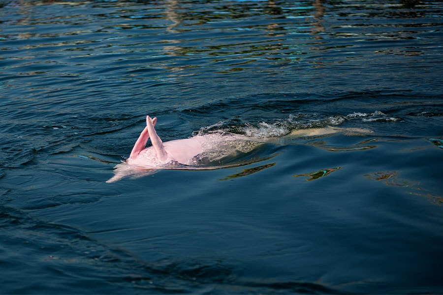

rivers, creeks, lakes, and ponds will all be seen in Freshwater habitats as it is a home for aphambians and fish alike.

The pink dolphin also named the amazon river dolphin is a dolphin that is famous because of there pinkish hue. The Amazon river dolphin is also treated as a mythical creature but not a kind one, in actuality it is typically friendly and not argressive against humans. Sadly they are being hunted and are killed for various reasons so they have become endagered.
The Mekong Giant Freshwater Fish is a giant fish who resides in freshwater habitats. They are grey to white color, and can be weighted at over half a ton. The giant fish is an endagered species because of it's loss of habitat.
 Home
Home